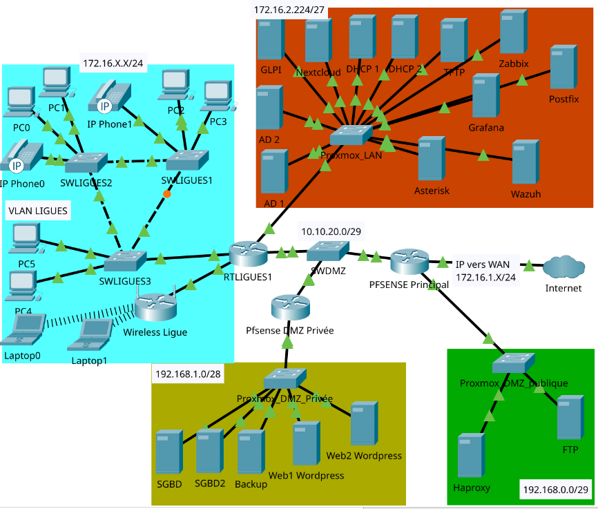

Atelier de professionnalisation · BTS SIO 2e année · En équipe · Septembre 2026 – mai 2027
La Maison des Ligues (M2L) accueille des ligues sportives et leur loue une infrastructure informatique, qu'elle administre pour elles. Le cahier des charges décrit un site de 4 bâtiments sur le domaine M2L.local, séparé en deux pôles pour la sécurité et l'administration : le réseau de la M2L (annuaire, serveurs, supervision) et les sous-réseaux des ligues, avec un VLAN par ligue.
172.16.0.0/16
réseau général, découpé en sous-réseaux par service et par ligue
32 ligues
capacité prévue, chacune dans son VLAN et son /24
2 DMZ
une publique (HAProxy, FTP) et une privée (web, bases de données)

Un VLAN par service et par ligue, routage par sous-interfaces 802.1Q, redondance des routeurs avec HSRP et des commutateurs avec le spanning-tree.
Active Directory, DNS et DHCP redondés, GLPI, Zabbix, Nextcloud, téléphonie Asterisk, serveurs web, bases de données et sauvegarde.
Pare-feu pfSense avec l'IDS Snort, DMZ publique et privée, détection des menaces par Wazuh et administration des équipements en SSH.
Dans l'équipe, je prends en charge la sécurité du périmètre et l'hébergement des sites web.
Le périmètre de sécurité entre le réseau interne, la DMZ publique et Internet, avec les règles de filtrage du cahier des charges.
Un second pare-feu pfSense qui isole les serveurs web, les bases de données et la sauvegarde.
Deux serveurs WordPress en DMZ privée, pour le site vitrine de la M2L et les sites des ligues.
En DMZ publique, il reçoit les visiteurs et répartit les requêtes entre WEB1 et WEB2 : si un serveur tombe, l'autre prend le relais.
Un accès distant sécurisé à l'infrastructure pour l'administration.
La collecte des journaux et la détection des menaces sur les serveurs clés.
Une équipe de 3 à 4 étudiants en autonomie, un chef d'équipe différent chaque semaine et un suivi des tâches sur Trello.
Chaque semaine, une auto-évaluation (travail réalisé, difficultés, solutions, compétences acquises) et une présentation de 5 à 10 minutes au professeur référent.
Une documentation technique et une procédure de tests pour chaque service mis en place, déposées sur Teams.
Les compétences du bloc 2 de l'option SISR couvertes par le projet.